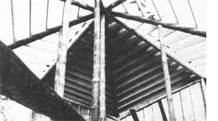

What once were mighty pine trees are now principal support timbers rising at the eight points of the octagon . . . as well as in a six-foot-diameter circle at the center focus of the LarsonDarnell dwelling. The multi sloped roof required painstaking care in the cutting and fitting of the rafters . . . a technique eagerly acquired by Cheslye during the construction process.